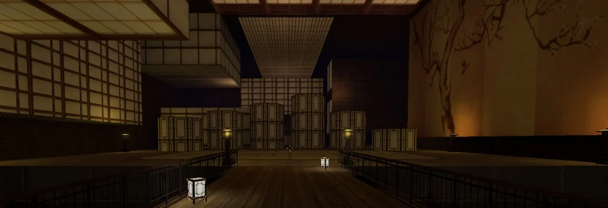
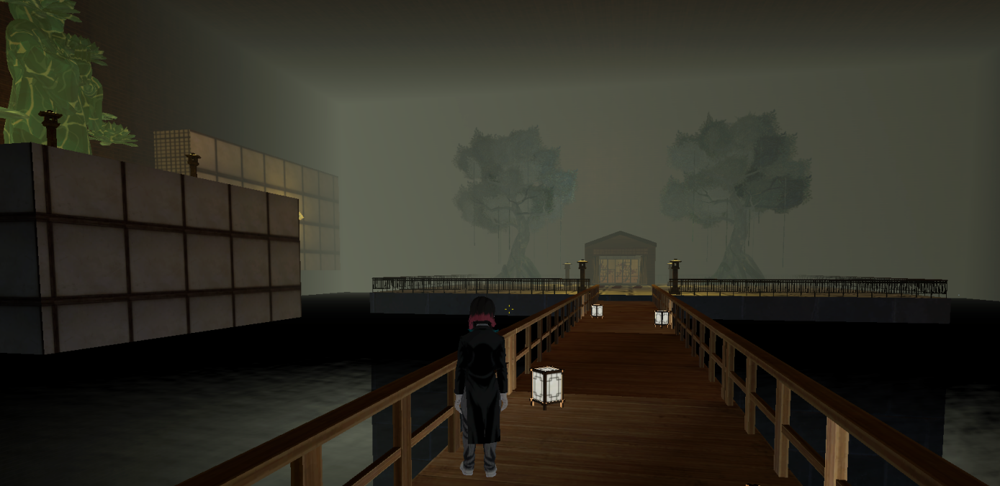
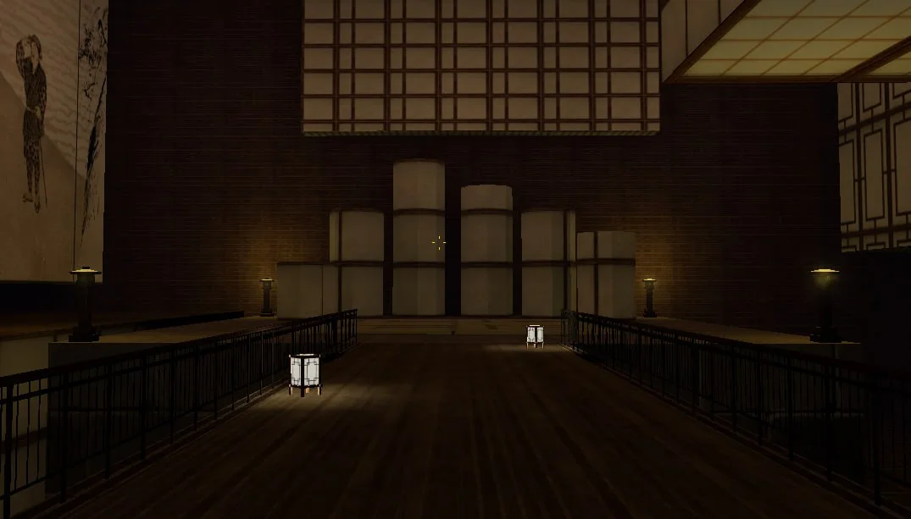
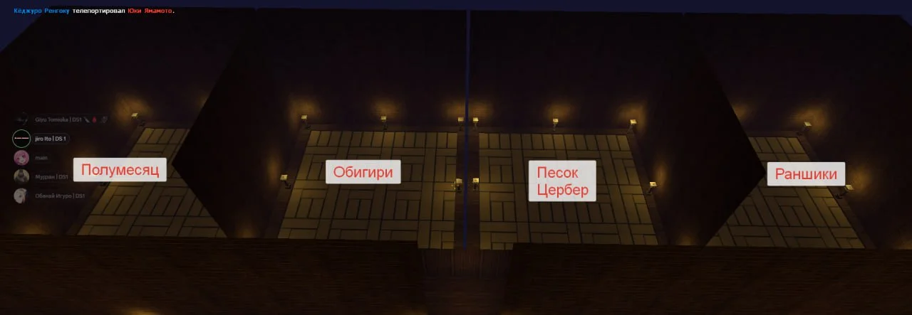
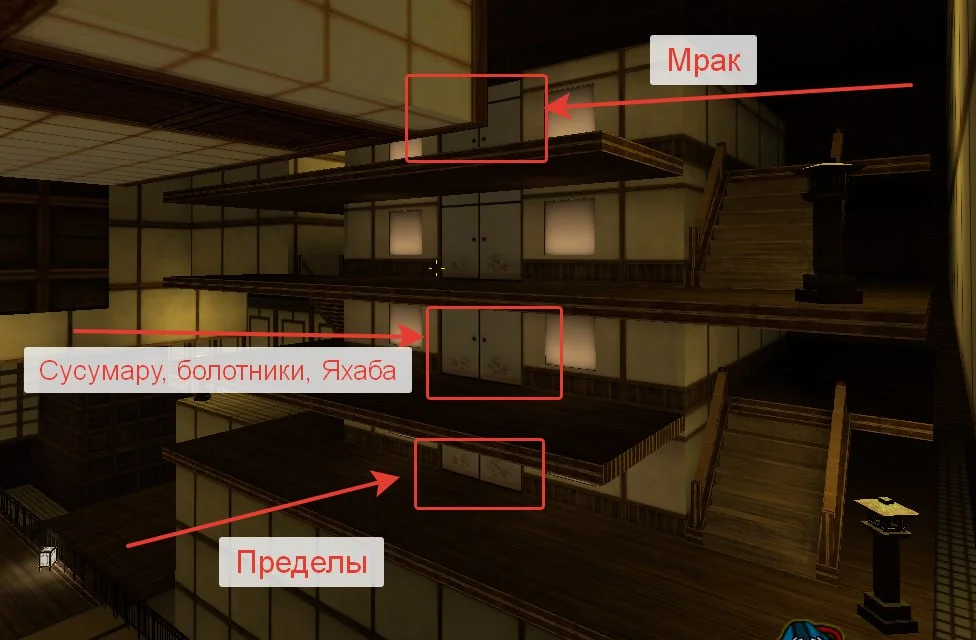

Отрядные помещения
У каждого отряда имеется свой дом/комната, свободно посещать их можно только членам отряда и демонам 12-ти лун.
Зал Мудзана
Можно заходить только Мудзану
Исключение: Созыв, Кокушибо
Дополнение: Запрещено стучать и открывать двери в зал
Зал высших лун
Можно заходить только высшим лунам и Прародителю
Исключение: Вас вызвали / построение

Зал Доумы
Можно заходить только высшим лунам и Прародителю
Исключение: Вас вызвали / построение

Зал низших лун
Можно заходить низшим лунам и выше
Исключение: Вас вызвали / построение

Гора Натагумо
Можно заходить с разрешения членов семьи и выше
Исключение: Прародитель, нынешний состав высших демонов дюжины
Поместье Кото
Можно заходить с разрешения членов отряда и выше (в зону для покупателей можно заходить без разрешения только при условии, что поместье Кото открыто)
Исключение: Прародитель, нынешний состав высших демонов дюжины
Храм Доумы
Можно заходить с разрешения членов отряда и выше
Исключение: Прародитель, нынешний состав высших демонов дюжины
Отрядные помещения
Можно заходить с разрешения членов отряда комнаты и выше

